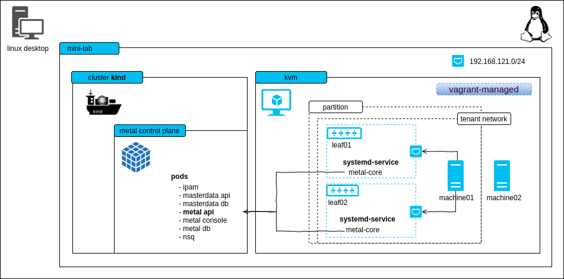

mini-lab
The mini-lab is a small, virtual setup to locally run the metal-stack. It deploys the metal control plane and a partition with two simulated leaf switches. The lab can be used for trying out metal-stack, demonstration purposes or development.

This project can also be used as a template for writing your own metal-stack deployments.
<!– TOC depthFrom:2 depthTo:6 withLinks:1 updateOnSave:1 orderedList:0 –>
<!– /TOC –>
Requirements
Linux machine with hardware virtualization support
Vagrant == 2.2.14 with vagrant-libvirt plugin >= 0.3.0 (for running the switch and machine VMs)
kvm as hypervisor for the VMs
Ubuntu 20.04:
sudo apt install -y qemu qemu-kvm libvirt-daemon bridge-utils virtinst libvirt-dev
docker >= 18.09 (for using kind and our deployment base image)
docker-compose >= 1.25.4 (for ease of use and for parallelizing control plane and partition deployment)
kind == v0.9.0 (for hosting the metal control plane on a kubernetes cluster v1.19.1)
ovmf to have a uefi firmware for virtual machines
the lab creates a virtual network 192.168.121.0/24 on your host machine, this hopefully does not overlap with other networks you have
(recommended) haveged to have enough random entropy (only needed if the PXE process does not work)
Here is some code that should help you setting up most of the requirements:
# Install Docker
curl -fsSL https://get.docker.com | sh
# if you want to be on the safe side, follow the original installation
# instructions at https://docs.docker.com/engine/install/ubuntu/
# Install vagrant and other stuff
wget https://releases.hashicorp.com/vagrant/2.2.9/vagrant_2.2.9_x86_64.deb
sudo apt-get install ./vagrant_2.2.9_x86_64.deb qemu-kvm virt-manager ovmf net-tools libvirt-dev haveged
# Ensure that your user is member of the group "libvirt"
# possibly you need to login again in order to make this change take effect
sudo usermod -G libvirt -a ${USER}
# Install libvirt plugin for vagrant
vagrant plugin install vagrant-libvirt
# Install kind from https://github.com/kubernetes-sigs/kind/releasesThe following ports are getting used statically:
| Port | Bind Address | Description |
|---|---|---|
| 6443 | 0.0.0.0 | kube-apiserver of the kind cluster |
| 4443 | 0.0.0.0 | HTTPS ingress |
| 4150 | 0.0.0.0 | nsqd |
| 4161 | 0.0.0.0 | nsq-lookupd |
| 8080 | 0.0.0.0 | HTTP ingress |
Known Limitations
- to keep the demo small there is no EVPN
- machine restart and destroy does not work because we cannot change the boot order via IPMI in the lab easily (virtual-bmc could, but it's buggy)
- login to the machines is possible with virsh console, login to the firewall is possible with SSH from your local machine
Try it out
Start the mini-lab with a kind cluster, a metal-api instance as well as some vagrant VMs with two leaf switches and two machine skeletons.
makeTwo machines in status PXE booting are visible with metalctl machine ls
docker-compose run metalctl machine ls
ID LAST EVENT WHEN AGE HOSTNAME PROJECT SIZE IMAGE PARTITION
e0ab02d2-27cd-5a5e-8efc-080ba80cf258 PXE Booting 3s
2294c949-88f6-5390-8154-fa53d93a3313 PXE Booting 5sWait until the machines reach the waiting state
docker-compose run metalctl machine ls
ID LAST EVENT WHEN AGE HOSTNAME PROJECT SIZE IMAGE PARTITION
e0ab02d2-27cd-5a5e-8efc-080ba80cf258 Waiting 8s v1-small-x86 vagrant
2294c949-88f6-5390-8154-fa53d93a3313 Waiting 8s v1-small-x86 vagrantCreate a machine/firewall with
make machine
make firewallAlternatively you may want to issue the metalctl commands by your own:
docker-compose run metalctl network allocate \
--partition vagrant \
--project 00000000-0000-0000-0000-000000000000 \
--name vagrant
# Lookup the network ID and create a machine
docker-compose run metalctl machine create \
--description test \
--name machine \
--hostname machine \
--project 00000000-0000-0000-0000-000000000000 \
--partition vagrant \
--image ubuntu-20.04 \
--size v1-small-x86 \
--networks <network-ID>
# Create a firewall that is also connected to the virtual internet-vagrant-lab network
docker-compose run metalctl machine create \
--description fw \
--name fw \
--hostname fw \
--project 00000000-0000-0000-0000-000000000000 \
--partition vagrant \
--image firewall-ubuntu-2.0 \
--size v1-small-x86 \
--networks internet-vagrant-lab,$(privatenet)See the installation process in action
make console-machine01/02
...
Ubuntu 20.04 machine ttyS0
machine login:Two machines are now installed and have status "Phoned Home"
docker-compose run metalctl machine ls
ID LAST EVENT WHEN AGE HOSTNAME PROJECT SIZE IMAGE PARTITION
e0ab02d2-27cd-5a5e-8efc-080ba80cf258 Phoned Home 2s 21s machine 00000000-0000-0000-0000-000000000000 v1-small-x86 Ubuntu 20.04 20200331 vagrant
2294c949-88f6-5390-8154-fa53d93a3313 Phoned Home 8s 18s fw 00000000-0000-0000-0000-000000000000 v1-small-x86 Firewall 2 Ubuntu 20200730 vagrantLogin with user name metal and the console password from
docker-compose run metalctl machine describe e0ab02d2-27cd-5a5e-8efc-080ba80cf258 | grep password
consolepassword: ...If you want to access the firewall with SSH or have internet connectivity from the firewall and machine, you'll need to have a static route configured that points to the vagrant boxes of the leaf switches:
make route # shows you the route needed to access the network internet-vagrant-lab
add this route to communicate with the virtual internet network 100.255.254.0/24 over leaf01 and leaf02
sudo ip r a 100.255.254.0/24 nexthop via 192.168.121.120 dev virbr0 nexthop via 192.168.121.132 dev virbr0
# Connect to the firewall
ssh metal@100.255.254.1To remove the kind cluster and the vagrant boxes, run
make cleanupReinstall machine
Reinstall a machine with
docker-compose run metalctl machine reinstall \
--image ubuntu-20.04 \
e0ab02d2-27cd-5a5e-8efc-080ba80cf258Remove machine
Remove a machine with
docker-compose run metalctl machine rm e0ab02d2-27cd-5a5e-8efc-080ba80cf258Development of metal-api, metal-hammer and metal-core
To simplify developing changes for the metal-api, metal-hammer and metal-core, it is possible to use development artifacts from within the mini-lab. See the dev instructions for more details.